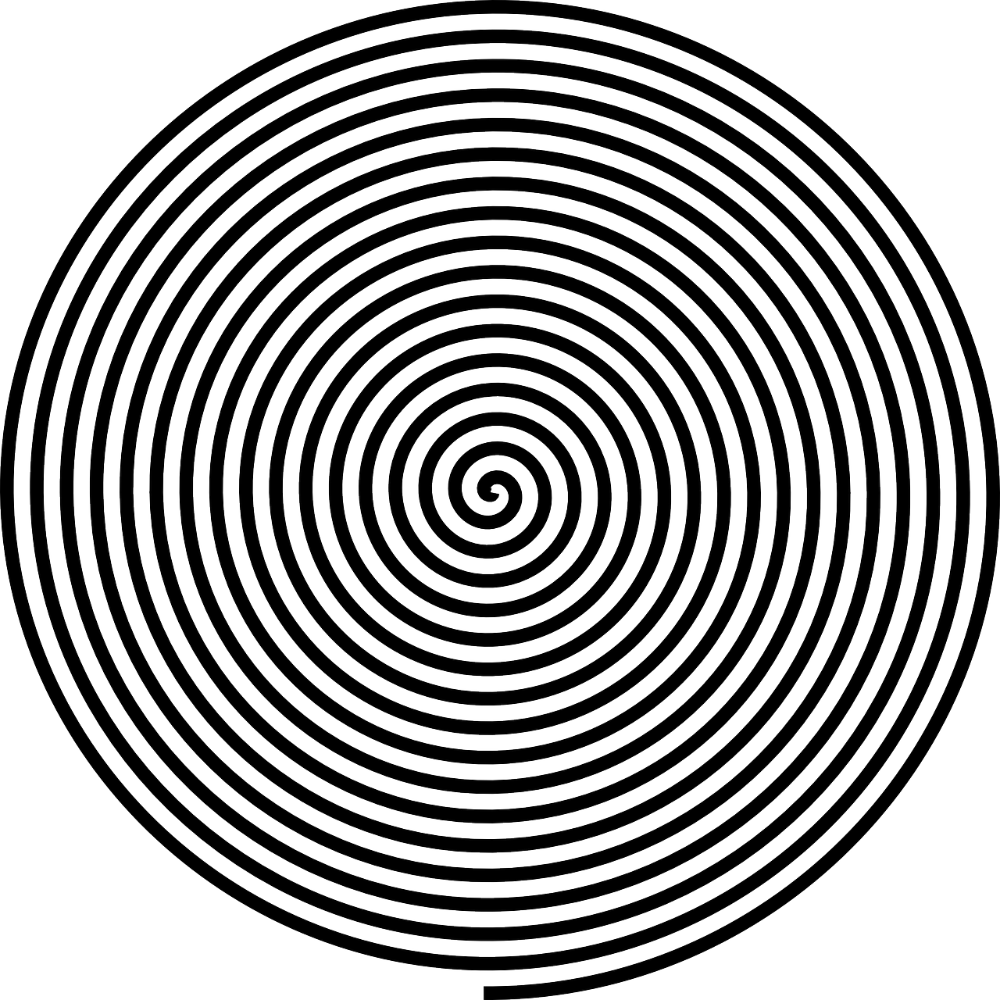

SPIN ANIMATION

I created the spin animation by inserting an image and then rotating it infinitely 360 degrees within 5 seconds. I used an image of a transparent spiral to create an interesting visual effect. I was inspired by optical illusions and wanted to create something that messed with the eye a bit. I enjoyed scaling the spiral and changing the speed to find the right combination of simple and disorienting.